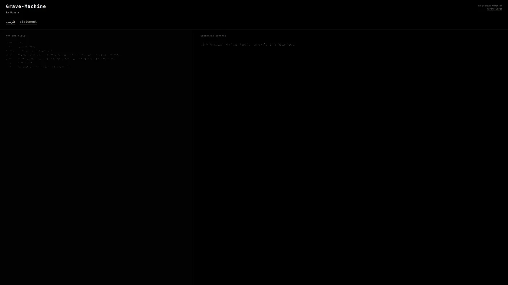
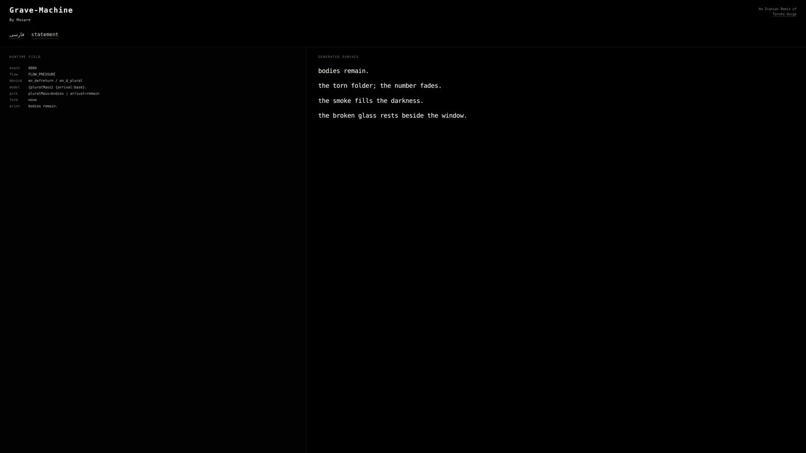

A bilingual generative e-poem · by Mozare · 2026
Grave-Machine
Grave-Machine carries burial, paperwork, and unfinished return into a bilingual generative surface. The poem continues beside a quieter record of how each line arrived.
Primary surfaceRelease v1.1.1 · English / Persian
Construction remains beside the poem.
English and Persian retain distinct systems.
SELECTED VIEWS
Three views
Three images hold distinct reading conditions without reducing the work to a single representative screen.

01
First event
One generated line and one receipt establish the two reading surfaces.
02
Accumulation
Recurrence becomes visible across a temporary field of lines.

03
Bilingual surface
The same release holds English and Persian as separately authored systems.
CONTEXT
From dramatic material to generative return
Grave was written as the practical component of Mohammad Zare’s MA in Dramatic Literature. Its scenes place bodies beside paperwork; rooms become processing sites, and burial begins to resemble administration.
Grave-Machine extracts this field of pressure rather than adapting the play as plot. The English and Persian versions share one runtime while retaining distinct materials, grammatical devices, language direction, and typographic proportions.
After Nick Montfort, Taroko Gorge (2009).
EDITION AND ACCESS
Work identity
A bilingual generative e-poem
Mozare
Mohammad Zare
Bilingual release v1.1.1 · release commit 6940d2e
English / Persian
Continuous poem beside a runtime trace
Zare, Mohammad (Mozare). Grave-Machine: An Iranian Remix of Taroko Gorge. Version 1.1.1, 2026. https://theblackbirdfield.com/works/grave-machine/run/